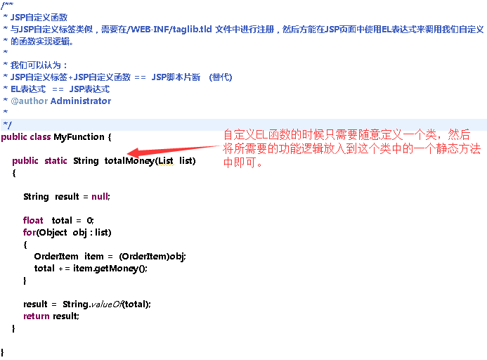
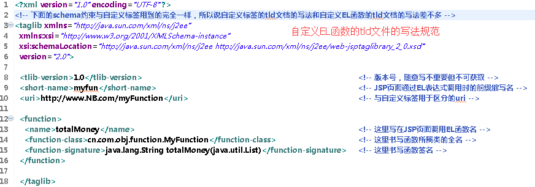
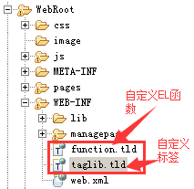
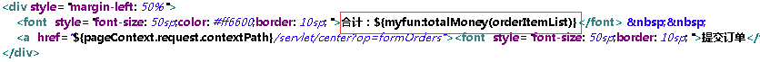

谨记一句话————EL表达式的作用是将表达式的结果转变为字符串字面量后输出到页面上显示出来
EL表达式的作用是用来将服务器端数据获取出来并显示到JSP页面上，因此ELb表达式只有读取数据的功能没有写入数据的功能。
EL表达式的基本语法形式是${表达式 }，表达式中的内容通常是以EL十一大隐含对象为开头，例如常用来JSP页面上组织访问当前Web应用的某一个servlet的标准写法，由于JSP页面上默认基地址是形如http://wwww.NB.com/ 这样的域名，因此如果想让JSP页面上的连接跳转到当前web应用中的某个servlet则需要利用EL表达进行URL的拼接，通用形式是 “${pageContext.request.contextPath}/servlet/xxxx” 这样的样子，其中这里用到的EL表达式就是以11大隐含对象也是JSP四大作用于之一的PageContext（JSP页面域对象）为表达式的开通，而在Java代码中是通过pageContext.getRequest().getContextPath(); 的方式来获取到当前Web应用的虚拟路径信息的，而EL表达式的写法就是去除掉存在以get开头的方法的get字眼，直接使用后面的字面即可实现相同功能的使用，这也就是pageContext.request.contextPath写法的原因了。
同时EL表达式还可以自动在四个作用域，即ServletContext域（对应JSP的application域对象）、HttpSession服务器端会话域、HttpServletRequest请求转发链域、PageContext JSP页面域 进行Attribute的搜寻查找。我们在Java中都是通过这四个域对象.setAttribute("名称",值对象) 来存放数据再通过getAttribute("名称")获取所存放的数据。而如果我们需要通过EL表达式将所存放的数据显示到JSPy页面上，可行的方式有两种：
第一种：我们知道在十一个隐含对象中除了pageContext这个类型与JSP九大隐含对象中的paget类型相同外，其他十个隐含对象其实都是Map容器，这些对象分别是：
pageScope 存放 JSP页面域中的 <String，Object> el索引方式 为 pageScope.键名
requestScope 请求转发链域中的键值对
sessionScope session域中的键值对
applicationScope web应用域中的键值对
parma 请求参数的键值对 ，如果有多个同名参数（比如 足球<input type="checked" name="hobby" value="football"> 篮球<input type="checked" name="hobby" value="basketball"> 这两个都被选中的时候 以get请求方式重写的URL就变成了 http://www.NB.com/WebRoot/xxxx?hobby=football&hobby=basketball）
这样的话 当使用 param.hobby只能得到第一个football。
paramValues <String, Strint[]>
header 请求头键值对
headerValues 存在多个同名请求头的时候使用这个 <String，String[]>
cookie <String, Cookie> 键是cookie的名字，值是cookie对象，这个很特殊一定要注意
initParam 获得当前web应用中的web.xml文档中的 全局初始化配置参数的键值对
因此当我们需要使用四个作用域对象中的某个值的时候，EL表达式的写法就是${ pageScope.键名}，由于pageScope是默认在EL表达式中可以直接使用的11个隐含对象之一，其它又是一个map容器，则可知EL表达式对于MAP容器的索引方式是直接通过 ".键名 "即可得到值。
类似的对于JavaBean中被set/get的属性成员，获取格式写法也是类似的“bean对象.属性名” 来得到属性值。因此我们需要记住在EL表达式中获取JavaBean和map容器的值只需要 “对象（map容器对象或者bean对象）. 键名或属性名” 就可以得到对应的值了，这是EL表达式的核心用法之一。
第二种：就是使用EL函数。
EL函数的调用方式通常是${前缀: 函数名（形式参数）} 然后el表达式会将函数返回的结果转变为字符串字面常量反映出来。EL函数的来源通常为JSTL中的fucntion以及我们自定义的EL函数，因此所使用的前缀都是定义EL函数的tld文档中所定义的，而函数名是tld文档所关联的实际存放在服务器端的类中的一个静态方法。具体关于EL函数的定义方式请见下一小节。
（1）首先写一个普通的类，这个类不需要继承任何类或实现任何接口，只需要将需要在el表达式中调用的方法写为静态方法，并最好返回一个字符串。因为我们知道EL表达式的作用就是将表达式的结果转变为字符串后输出，如果所调用的函数返回值结果很容易转变为字符串的话，或者说结果根本就是字符串的话就可以更容易更准确更详实地反应到JSP页面上了。

（2）写一个类似于自定义标签的tld文档，该文档的根标签与自定义标签的tld文档完全相同，主要区别是一个是用<tag>标签声明了自定义标签，另一个是用<function>标签来生命EL函数，具体形式可以参考如下：
（3）将这个tld文档同样防盗/WEB-INF目录之下，然后再需要使用的JSP页面上通用通过<%@ taglib %>标签预先导入这个tld文档，然后就可以在页面的任何位置通过EL表达式来调用所定义的EL函数了。

